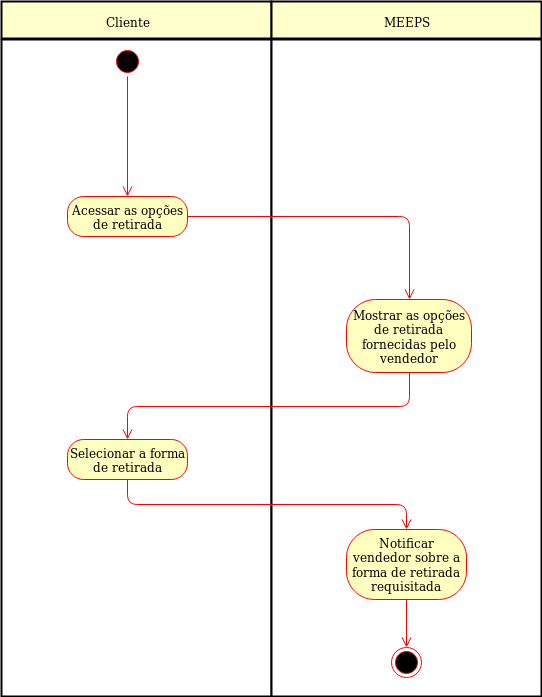

Listar forma de retirada - UC008
O sistema deve mostrar ao usuário quais são as opções de retirada do produto
Ator:
Pré-condições
- O usuário deve estar logado
- O sistema deve ter produtos cadastrados
- O usuário deve ter produtos no carrinho
- O vendedor deve cadastrar suas formas de retirada dos seus produtos
Fluxo Principal

Pós-condições
- O usuário conhece as formas de retirada disponibilizadas